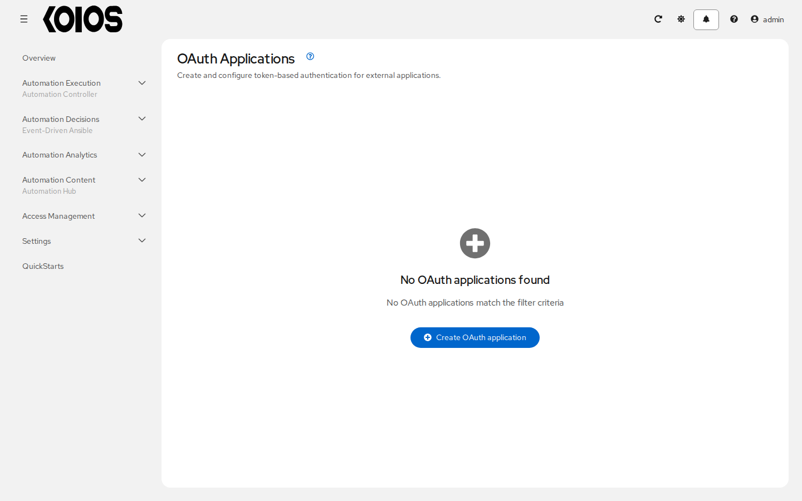

API tokens and OAuth applications
Scripts, integrations and other services that call the platform API should not use a person’s
password. The gateway issues OAuth 2 tokens for them. A token works with every API behind the
gateway (/api/gateway/, /api/controller/, /api/eda/ and /api/galaxy/) and acts as the user
who owns it, limited by its scope:
curl -H "Authorization: Bearer <token>" https://<koios host>/api/controller/v2/job_templates/
Read tokens can only read.
Write tokens can do everything the user can.
A token never grants more than its user’s roles.
API tokens
A personal token belongs to you and is not tied to any application. To create one, go to Access
Management > API Tokens, click Create API token, and set a Description and the Scope.
The token is shown once, when it is created: copy it then. The list shows the tokens you can see,
with their user, scope, application, when they were last used and when they expire. Superusers see
every user’s tokens, including the one of koios_operator_service_account, which the operator uses
to configure the platform: do not delete it.
Users who log in through an external provider (LDAP, SAML, OIDC…) cannot create tokens unless Allow External Users to Create OAuth2 Tokens is on (Settings > Platform gateway, under Other settings). A token lives on its own: it keeps working after the user’s provider session ends, until the token expires or is deleted. Delete the tokens of users who leave.
Tokens expire one year after they are created.
The same can be done through the API:
curl -u <user> -X POST -H "Content-Type: application/json" \
-d '{"description": "nightly sync", "application": null, "scope": "write"}' \
https://<koios host>/api/gateway/v1/tokens/
OAuth applications
An application represents an external service that obtains tokens on behalf of users through the standard OAuth 2 flows. Superusers manage them in Access Management > OAuth Applications:

Name and Organization : The application and the organization it belongs to.
Authorization grant type
: Authorization code: the service sends users to the platform to log in and approve it, and
receives a token for them. It is the right choice for web applications, and the only one that
works with users from SSO providers. Clients must use PKCE (send a code_challenge) unless
PKCE Required is turned off for the application.
: Resource owner password-based: the service sends the user’s username and password to obtain a
token. Only for trusted clients, and only for users with a password the gateway can check (local,
LDAP, RADIUS, TACACS+).
Client type : Confidential for services that can keep a secret (a server), Public for those that cannot (a command line tool or a browser application).
Redirect URIs : Where users are sent back after approving the application (authorization code only). Separate several with spaces.
When you create a confidential application, its Client ID and Client secret are shown once.
OAuth 2 endpoints
The gateway serves the standard endpoints under /o/:
Endpoint |
Use |
|---|---|
|
Start of the authorization code flow. |
|
Obtain a token, or refresh one with |
|
Revoke a token. |
|
OpenID Connect discovery and user information. |
Obtain a token with the password grant:
curl -X POST -d "grant_type=password&username=<user>&password=<password>&scope=read" \
-u "<client id>:<client secret>" https://<koios host>/o/token/
The response holds an access_token and a refresh_token. By default the access token lasts a
year and the refresh token about 30 days: to keep a long-lived integration going, refresh within
that time to get a new pair:
curl -X POST -d "grant_type=refresh_token&refresh_token=<refresh token>" \
-u "<client id>:<client secret>" https://<koios host>/o/token/
Revoke it when it is no longer needed:
curl -X POST -d "token=<access token>" \
-u "<client id>:<client secret>" https://<koios host>/o/revoke_token/
The /o/ endpoints only handle tokens of applications. Personal tokens are created and deleted
through /api/gateway/v1/tokens/.